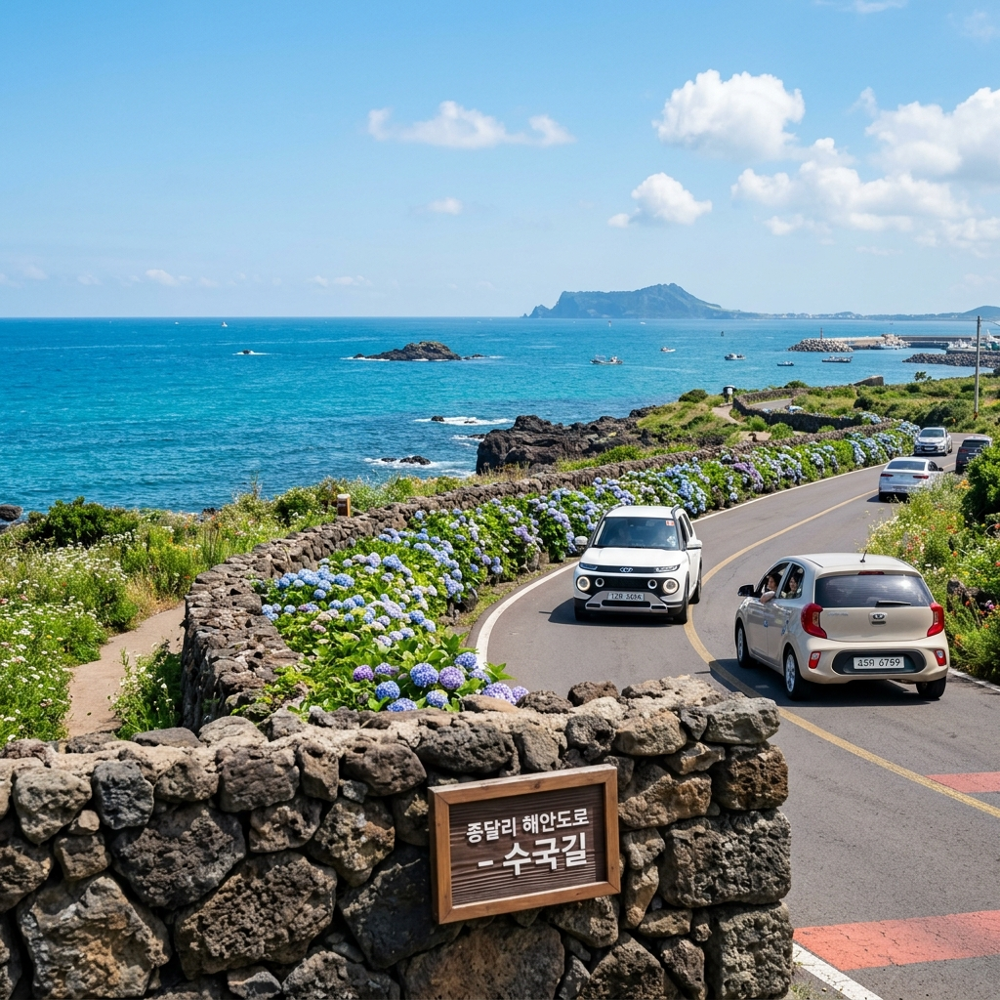
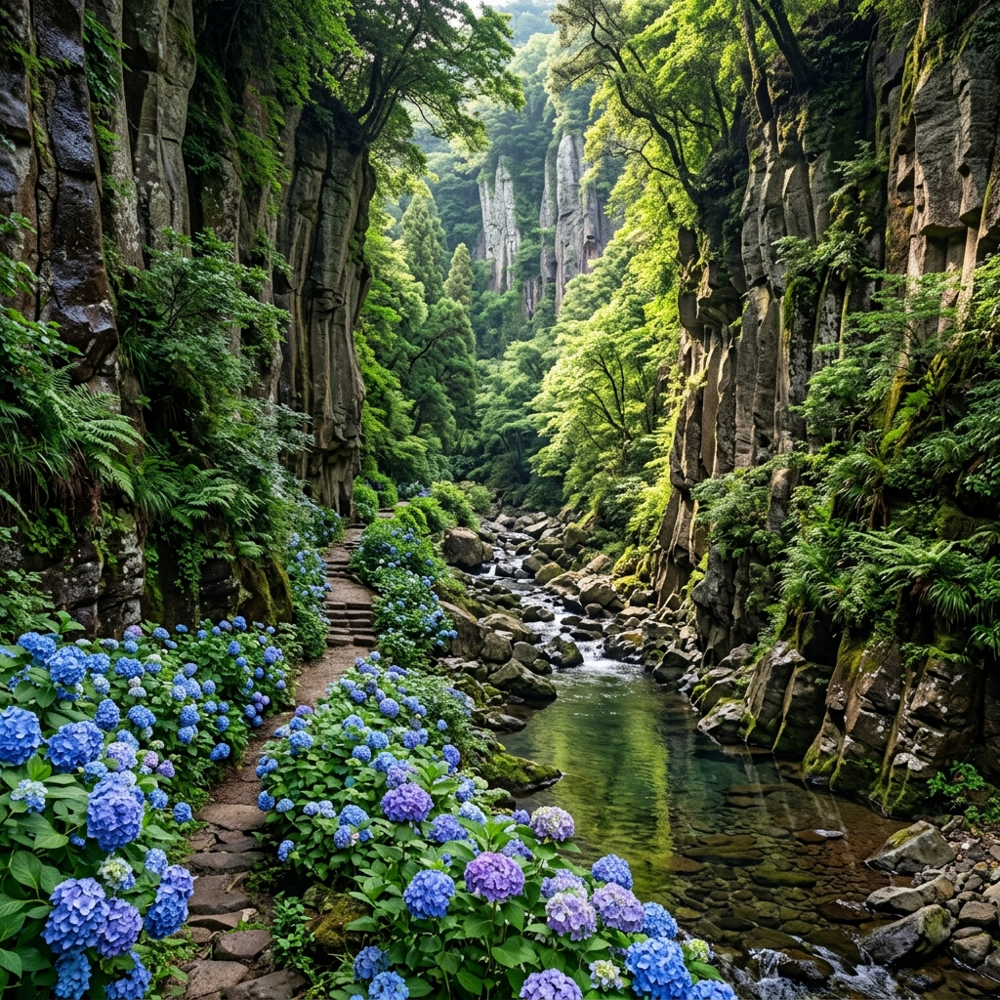
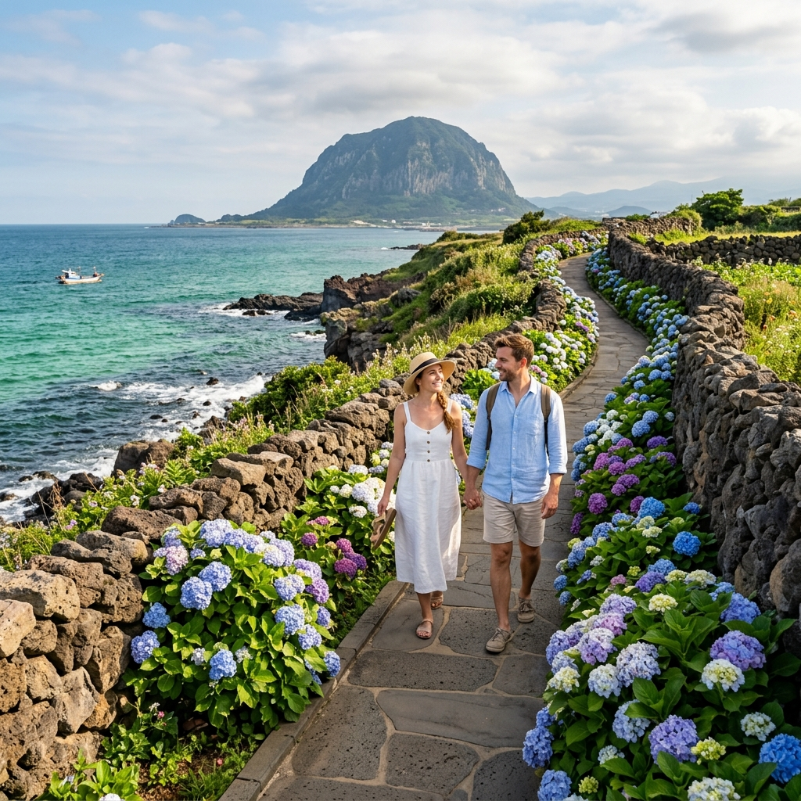

제주 수국이 다른 지역 수국보다 특별한 이유는 토양과 기후에 있습니다.
제주의 현무암질 화산토는 산성 성질을 갖고 있어, 수국 꽃잎이 파란색·보라색으로 발색되는 데 유리한 환경을 제공합니다. 그래서 같은 흰색 수국 묘목을 심어도 제주 땅에서 자라면 독특한 청보라 빛으로 꽃이 피어나는 경우가 많습니다.
해양성 기후 덕분에 수국이 자라기 좋은 습도가 연중 유지됩니다. 섬 전체가 수국 서식지라 해도 과언이 아니며, 특별히 찾아가지 않더라도 드라이브 중 자연스럽게 수국을 만나게 됩니다.
제주 수국의 절정은 해안가 기준 6월 중순, 중산간과 오름 인근은 6월 말~7월 초입니다.

동쪽 코스는 제주 공항에서 가깝고 성산일출봉·우도와 연계하기 좋습니다.
종달리는 제주 동쪽 끝자락 조용한 어촌 마을입니다. 돌담 사이사이에 수국이 피어나는 풍경이 제주 감성 사진의 대표 이미지로 자리 잡았습니다.
종달리에서 하도리 방향으로 이어지는 해안도로 약 5km는 왼쪽으로 쪽빛 바다, 오른쪽으로 돌담과 수국이 나란히 펼쳐지는 드라이브 코스입니다. 이 구간을 천천히 달리다 차를 세워 바다와 수국을 함께 담는 것이 이 코스의 핵심입니다.
하도리에서는 해녀 할머니들이 직접 채취한 소라·전복·해산물을 즐길 수 있습니다. 수국 감상 이후 짭조름한 바다 내음과 함께하는 해산물 한 상이 이 코스의 마무리입니다.
서쪽 코스는 제주의 이국적인 풍경과 수국을 함께 즐기고 싶은 분들에게 맞습니다.
안덕계곡은 깎아지른 현무암 절벽 사이로 맑은 물이 흐르는 제주에서 가장 신비로운 계곡입니다. 6월에는 계곡 입구와 진입로 양쪽에 수국이 피어나, 수국과 기암 절벽이 한 프레임에 담기는 독특한 구도가 완성됩니다.
안덕계곡에서 화순·사계리 방향으로 이동하면 산방산을 배경으로 한 수국 사진을 찍을 수 있습니다. 현무암 기암과 산방산, 수국의 조합은 다른 수국 명소에서는 찾아볼 수 없는 제주 서쪽만의 풍경입니다.
서쪽 코스에서 빠질 수 없는 것이 저지오름 인근 카페 탐방입니다. 중산간 마을에 자리 잡은 감각적인 카페들과 수국의 조합이 이 지역만의 개성입니다.
동쪽과 서쪽 각각 어떤 분들에게 더 맞는지 정리합니다.
동쪽 코스 추천: 제주 시내 또는 공항 인근 숙박 / 성산일출봉·우도 연계 계획 있음 / 어촌 감성과 해녀 문화에 관심 / 제주 동쪽 특유의 열린 바다 뷰를 원함
서쪽 코스 추천: 서귀포 숙박 / 산방산·주상절리·카멜리아힐 연계 계획 있음 / 감성 카페와 예술 공간 탐방을 좋아함 / 계곡과 기암 지형의 이국적 풍경을 원함
이틀 이상 일정이 있다면 동쪽과 서쪽을 하루씩 탐방하는 것이 가장 이상적입니다. 하루 일정이라면 제주 공항에서 가까운 동쪽 코스가 이동 시간 대비 효율이 높습니다.

제주 수국 사진에서 중요한 것은 '무엇을 배경으로 넣는가'입니다.
구도 1: 돌담 + 수국 + 바다의 3층 구성. 종달리·하도리 해안도로에서 가장 쉽게 연출할 수 있습니다. 제주 검은 돌담을 전경에, 파란 수국을 중경에, 쪽빛 바다를 배경으로 넣으면 자연스럽게 청색 레이어가 겹치는 구도가 나옵니다.
구도 2: 수국 군락 + 오름 능선. 중산간 지역에서 연출할 수 있습니다. 수국을 전경에 두고 오름의 완만한 곡선을 배경으로 넣으면 제주 특유의 풍경이 담깁니다.
구도 3: 인물 + 수국 보케. 스마트폰 인물 모드를 사용해 수국 군락 속에 서면 배경이 아름답게 흐리는 효과가 납니다. 흰 옷이나 파란색 계통 옷이 수국과 잘 어울립니다.
6월 제주는 장마의 영향이 시작되는 시기입니다. 그런데 수국 여행에 있어 비는 꼭 나쁜 것이 아닙니다.
수국은 비를 맞은 직후 색이 가장 선명하고 꽃잎에 물방울이 맺혀 영롱한 느낌을 줍니다. 비 온 다음 날 오전, 구름이 걷히면서 나오는 부드러운 빛에 수국이 빛나는 장면은 말로 설명하기 어려운 아름다움이 있습니다.
강풍을 동반한 폭우나 태풍 주의보가 있는 날은 피해야 하지만, 보슬비 정도의 날씨라면 우산과 우비를 챙겨서 가는 것도 좋습니다. 사람이 적어 여유롭게 수국을 즐길 수 있는 덤도 있습니다.
렌터카 없이 제주 수국 여행이 가능합니다.
동쪽 코스는 제주 시내에서 101번 또는 201번 시외버스를 타고 구좌읍 방면으로 이동한 뒤, 마을 버스나 도보로 종달리·하도리 해안도로를 산책합니다. 배차 간격이 길므로 시간표를 미리 확인해야 합니다.
서쪽 코스는 시외버스 151번(제주~모슬포 방면)으로 안덕면에서 하차 후 택시 또는 도보로 이동합니다.
대중교통의 대안으로 전동 킥보드나 자전거 대여가 가능한 지역에서는 이를 활용하면 해안도로를 더 자유롭게 즐길 수 있습니다. 제주 시내 일부 지역에서 공유 킥보드 서비스가 운영됩니다.
6월 제주에서 꼭 맛봐야 할 제철 음식을 소개합니다.
성게 비빔밥은 제주 동쪽 구좌읍·하도리 일대 해녀 식당에서 먹을 수 있습니다. 4~6월이 성게 제철이라 이 시기가 가장 신선합니다. 현장 가격은 1만5천 원 안팎이며 시세는 변동될 수 있습니다.
자리물회는 제주 토종 생선인 자리돔으로 만든 여름 음식입니다. 6월부터 본격적으로 맛이 오르고 서귀포 쪽 전문점에서 즐길 수 있습니다.
제주 흑돼지는 어느 지역에서나 맛볼 수 있는데, 제주 시내 연동·노형동 흑돼지 거리나 서귀포 이중섭로 인근 식당들이 합리적인 가격으로 인기를 끌고 있습니다.

6월은 제주 본격 성수기(7~8월) 전이라 숙박비가 비교적 합리적입니다.
다만 수국 절정기인 6월 중하순 주말에는 서귀포 시내 및 동쪽 성산읍 인기 숙소들이 일찍 마감되는 경우가 있습니다. 2~3주 전에 예약하는 것이 안전합니다.
동쪽 코스 탐방 시 구좌읍·성산읍 펜션이나 게스트하우스, 서쪽 코스 탐방 시 안덕면 또는 서귀포 시내 숙소가 동선상 유리합니다.
1박 2일 일정을 권장합니다. 당일치기도 가능하지만, 하루로는 동쪽과 서쪽 모두를 여유롭게 다니기 벅찹니다.
제주 수국 드라이브를 떠나기 전 이것만은 꼭 확인하세요.
렌터카는 최소 2주 전 예약이 안전합니다. 6월 중하순 주말은 조기 매진 가능성이 있습니다.
제주 6월 자외선 지수가 매우 높습니다. SPF50 이상 자외선 차단제와 선글라스, 모자를 반드시 챙기세요.
갑작스러운 소나기에 대비해 접이식 우산을 항상 가방에 넣어 두세요. 우산 하나가 수국 감상의 완성도를 높여 줄 수 있습니다.
개화 현황은 제주관광공사 공식 채널이나 현지 SNS 계정을 통해 방문 1주일 전 확인하세요. 그해 날씨에 따라 절정 시기가 1~2주 앞당겨지거나 늦어질 수 있습니다.